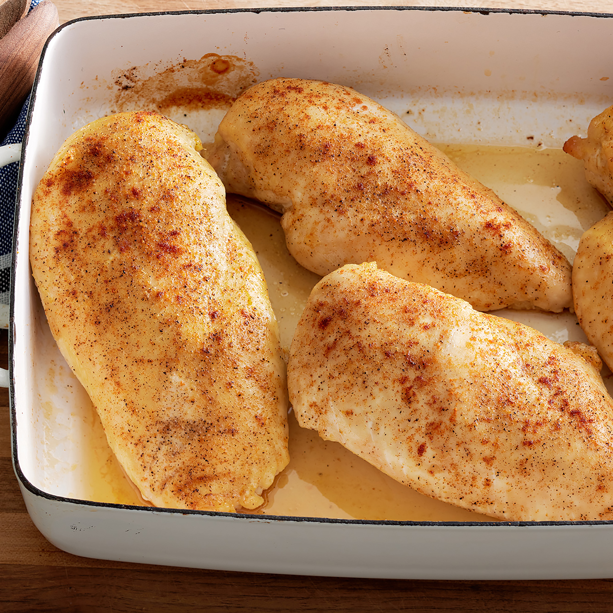

Chicken Breasts

Discription
learn how to bake chicken thats tender,juicy and perfect everytime with this simple, 5 ingredient recipe for boneless,skinless chicken breasts.adding just a bit of chicken broth to those beautiful pan drippings creates a tasty pan sauce that addds extra flavour at the table
Ingrediets
- 4(5 ounce)skinless,boneless chicken breats halves
- 2 table spoons olive oil
- 1/2 teaspoons coarse sea salt,or more to taste
- 1 pinch creole seasoning,or more to taste
- 1 tablespoon chicken broth,or more to taste
- 1 table spoon water ,or as need
Steps
- Step1-preheat the oven to 400 degrees F(200 degrees)
- Step2-rub chicken breasts with olive oil and sprinkle both sides with salt and creole seasonings.place pan chicken in a broiler pan
- Step3-bake in the preheated oven for 10 minutes flip chicken and cook until no longer pink in the center and the juices run clear,about 15 minutes more.an instant-read thermometer inserted into the center should read atleast 165 degreesF(74 degrees)
- Step4-remove to a plate
- Step5-pour chicken broth into the pan and scrap any browned bits off the bottom with a flat-edged wooden spatula.Add more broth if needed to dislodge the browned bits,but not too much or it will be watery
- Step6-to serve ,drizzle the pan sauce over the chicken